Década de 1980
Raíces del Reguetón: El Auge del Reggae en Español.
Los Inicios
Durante la década de 1980, Panamá se convirtió en la cuna de un nuevo sonido que transformaría la música latina: el reggae en español. Artistas pioneros como Renato y Nando Boom fusionaron el ritmo vibrante del dancehall jamaiquino con letras en español, creando así las bases del reguetón.
Este movimiento musical encontró su eco en los barrios de Panamá, especialmente en Río Abajo, donde los Diablos Rojos —autobuses decorados con colores vivos— se convirtieron en los primeros difusores de estas melodías contagiosas. Con casetes que relataban historias del día a día, estos artistas lograron una conexión única con su audiencia.
El hit "La chica de los ojos café" de Renato, lanzado en 1985, marcó un hito al convertirse en el primer éxito internacional del reggae en español. Este logro abrió el camino para que otros artistas panameños alcanzaran la fama y sentaran las bases de lo que, con el tiempo, evolucionaría en el reguetón.
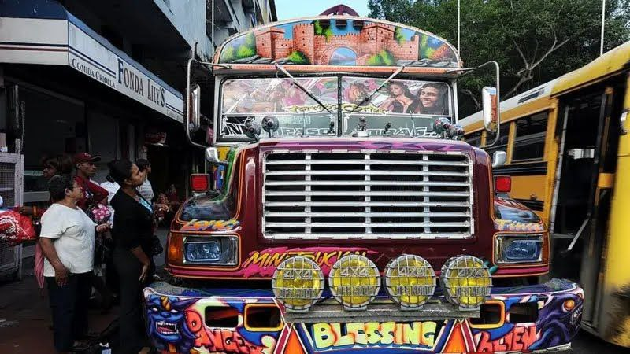"Diablos Rojos"
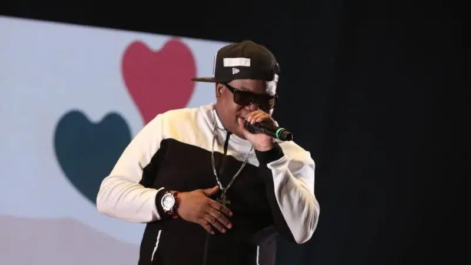Renato Audler, autor de "La chica de los ojos café"
Finales de los 80, inicios de los 90
La llegada del denbow
El Dembow: El Ritmo que Transformó la Música Urbana
Edgardo Franco, conocido como El General por su habilidad para la improvisación, llegó a Nueva York en 1985 con la intención de estudiar contabilidad. Sin embargo, un año después, su cuñado Nando Boom lo convenció de volver a la música.
En 1990, El General grabó "Tu pun pun", un sencillo que se convirtió en el primer tema de reggae en español en sonar en la radio estadounidense. Aunque otros éxitos como "Muévelo", "El caramelo" y "Boriqua Anthem" vendieron miles de copias, El General se retiró de la música y se unió a los Testigos de Jehová.
Para ese momento, ninguno de estos artistas había creado propiamente el "reguetón". Sin embargo, todo cambió con una canción.
El cuñado de El General, Nando Boom, fue el primero en montarse en un ritmo de dembow, al estilo reguetonero que conocemos hoy. Su canción "Ellos benia (dembow)" versionaba un tema de letras homófobas interpretado por el jamaiquino Shabba Ranks. Este ritmo, que El Chombo llama "el tumpa, tumpa", se convirtió en la base de muchos otros temas y finalmente dio origen al reguetón en Puerto Rico.
El dembow, con su característico patrón rítmico, marcó un antes y un después en la música urbana, transformando la escena y abriendo paso a un género que conquistaría el mundo.
Así nació el reguetón, una revolución latina que sigue resonando en las calles y las pistas de baile.
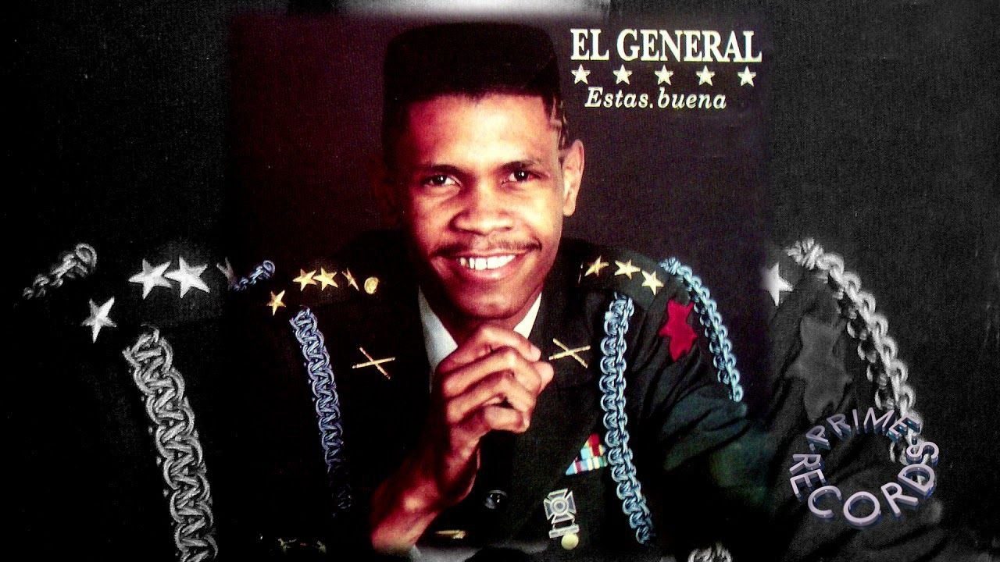"El General"
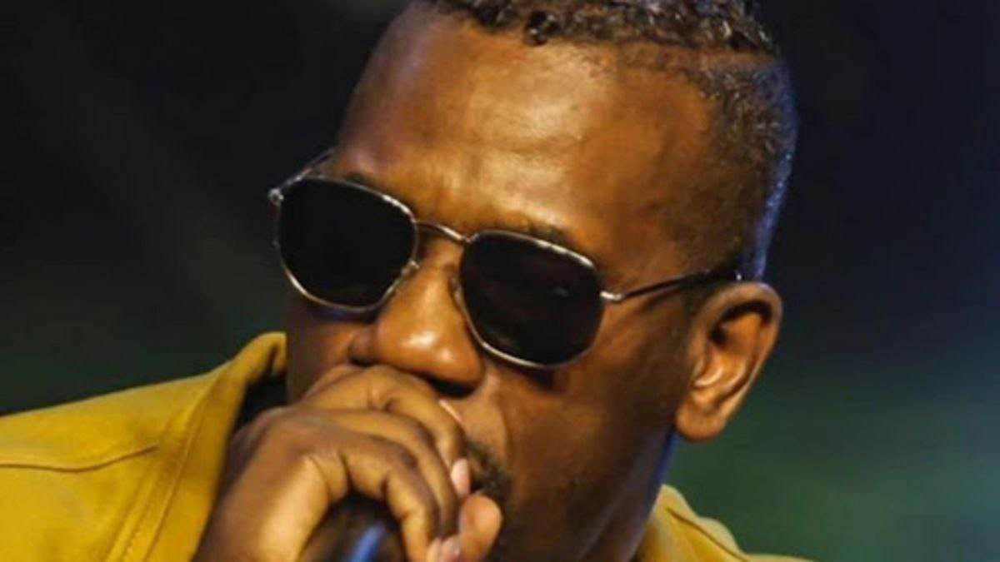Nando Bloom
Los Primeros Éxitos (1990s)
El Nacimiento del Reggaetón.
El Reguetón: Desde el Underground hasta la Revolución Transcultural
En los años 90, el reggae en español se fusionó con el hip-hop para dar vida al reguetón en Puerto Rico. En la discoteca The Noise, propiedad de DJ Negro, se celebraban actuaciones clandestinas de este nuevo género, que relataba la realidad de las comunidades marginadas de la isla. A pesar de la censura y persecución inicial, The Noise se convirtió en un espacio vital para el desarrollo del reguetón y el lanzamiento de artistas como Daddy Yankee e Ivy Queen.
El reguetón, influenciado por el dancehall jamaiquino, el reggae panameño y el hip-hop estadounidense, se distinguió por su ritmo "dem bow" y letras en español. Este género musical se transformó en un fenómeno transcultural, superando barreras y resonando en las calles y pistas de baile de todo el mundo. El reguetón es el resultado de una revolución musical que comenzó con la canción "Ellos Benia" de Nando Boom y evolucionó en Puerto Rico, creando un sonido único que continúa vibrando en la cultura urbana actual.
Los primeros exponentes del reguetón en los años 90 jugaron un papel crucial en la formación y popularización del género. Vico C, conocido como el padre del reguetón, fue uno de los pioneros con su mezcla única de hip-hop, reggae y estilos caribeños. Su canción "Bomba para Afincar" es considerada por muchos como la primera canción de reguetón de la historia⁴.
Daddy Yankee, otro pilar del reguetón, comenzó su carrera en esta década y se convirtió en uno de los nombres más reconocidos del género. Con su estilo distintivo y su habilidad para contar historias de la vida urbana, ayudó a llevar el reguetón a una audiencia internacional.
Otros artistas importantes de la época incluyen a Don Omar, Ivy Queen, Nicky Jam, Wisin & Yandel, quienes comenzaron a crear música que combinaba el reggae con ritmos de hip-hop y dancehall, conocido como dembow⁵. Estos artistas y sus producciones caseras fueron fundamentales para establecer el reguetón como un género musical legítimo y vibrante que resonaría en todo el mundo.
El reguetón de los años 90 fue una época de experimentación y crecimiento, donde los artistas tomaron influencias de varios géneros y las fusionaron para crear algo completamente nuevo y emocionante. Esta base sólida permitió que el reguetón evolucionara y se convirtiera en el fenómeno global que es hoy.
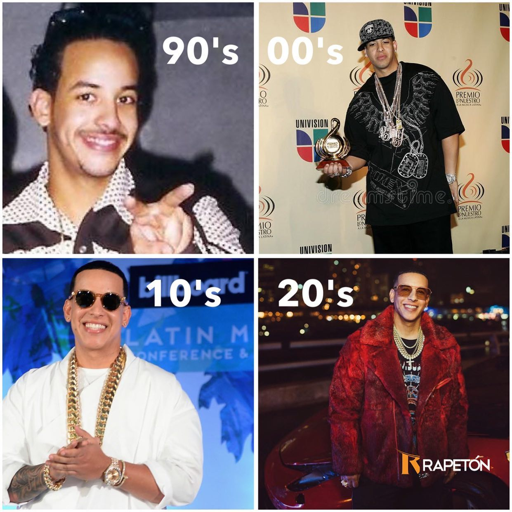Daddy Yankee
Los 2000
El reggaetón gana popularidad a nivel mundial de forma vertiginosa.
Una era dorada
En la década de 2000, el reguetón experimentó un auge masivo en popularidad en todo el mundo. Durante este período, varios exponentes del género dejaron una huella indeleble en la historia de la música urbana.
Daddy Yankee:
Icono indiscutible del reguetón en los 2000. Canciones icónicas como "Gasolina" y "Lo Que Pasó, Pasó" se convirtieron en himnos del género. Su estilo distintivo y letras contagiosas trascendieron las fronteras de Puerto Rico, alcanzando fama internacional. Contribuyó significativamente al crecimiento exponencial del reguetón y dejó un legado duradero.
Don Omar:
Otro pilar fundamental del reguetón en esa década. Su éxito "Dale Don Dale" también se convirtió en un hito del género. Junto con Daddy Yankee, contribuyó al auge global del reguetón y consolidó su posición como líder en la escena musical.
Wisin & Yandel:
Como dúo, Wisin & Yandel fueron influyentes en la expansión del reguetón. Sus colaboraciones y estilo único dejaron una marca en la música urbana de los 2000.
Tego Calderón:
Con su lírica cruda y auténtica, Tego Calderón se destacó como uno de los letristas más importantes del género. Canciones como "Pa' Que Retozen" y "Guasa, Guasa" lo posicionaron como un referente en la escena.
Durante la década de 2000, el reguetón vio el surgimiento de varios artistas que contribuyeron a la expansión y diversificación del género. Entre ellos se destacan Cosculluela, Farruko, J Álvarez, Ñengo Flow, Eloy, Gotay, Jadiel, Kendo Kaponi y Luigi 21 Plus. Estos artistas, con su talento y creatividad, ayudaron a llevar el reguetón más allá de sus raíces caribeñas, adaptándose a las tendencias globales y explorando nuevas fusiones musicales.
El impacto del reguetón en la música, la moda y la cultura urbana fue significativo en esta época. El género no solo dominó las listas de éxitos, sino que también influyó en la moda urbana, inspirando un estilo de vestimenta que reflejaba la actitud y el espíritu del reguetón. Además, el baile y el lenguaje coloquial asociados al reguetón se integraron en la cultura popular, marcando una influencia que trascendió la música y se convirtió en un fenómeno cultural amplio.
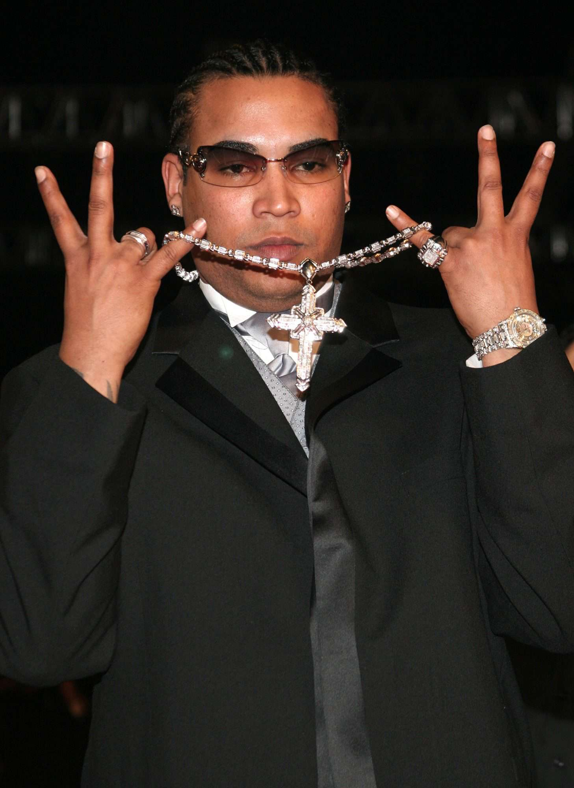"Don Omar"
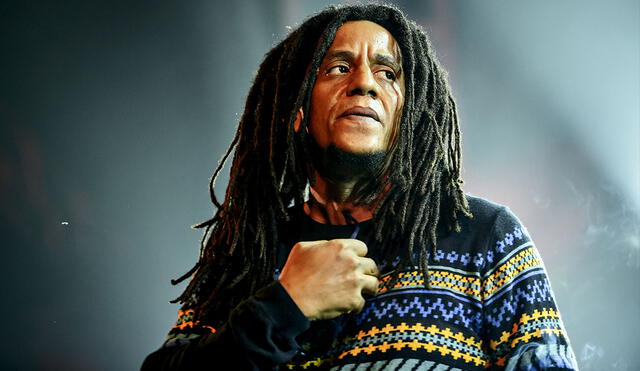"Tego Calderón"
De 2010 a 2016
Tiempos de Cambio
Innovar
Entre 2010 y 2016, el reguetón experimentó una transformación significativa y un aumento en su popularidad global. Durante estos años, el género se expandió más allá de sus raíces caribeñas y se integró en la corriente principal de la música.
Artistas emergentes como Cosculluela, Farruko, J Álvarez, Ñengo Flow, Eloy, Gotay, Jadiel, Kendo Kaponi y Luigi 21 Plus comenzaron a destacar, trayendo frescura al género. Además, hubo una desaceleración en la popularidad del reguetón tradicional, lo que llevó a los artistas a explorar diferentes fusiones musicales, incluyendo el nacimiento del Trap Latino hacia mediados de 2015.
Algunas canciones que definieron esta época incluyen:
- "Hasta el amanecer" de Nicky Jam
- "Picky" de Joey Montana
- "Borro Cassette" de Maluma
- "La Gozadera" de Gente de Zona y Marc Anthony
- "Sigueme y Te Sigo" de Daddy Yankee
- "Me Voy Enamorando" de Chino & Nacho ft. Farruko (remix)
El reguetón de este período no solo se caracterizó por su ritmo pegajoso y letras sensuales, sino también por su capacidad para adaptarse y evolucionar, lo que le permitió mantenerse relevante y continuar su expansión a nuevos mercados y audiencias.
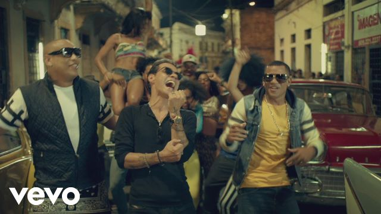"La Gozadera"
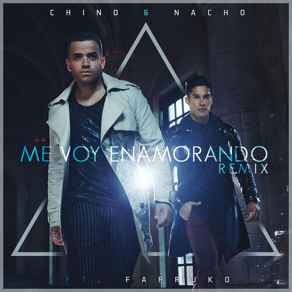"Chino & Nacho"
2017
Rompiendo esquemas. El caso de Despacito
Una nueva era de oro
En 2017, el reguetón alcanzó nuevos niveles de popularidad global, gracias en gran parte a "Despacito". La canción, lanzada el 13 de enero, fue una colaboración entre Luis Fonsi y Daddy Yankee que rápidamente se convirtió en un éxito mundial. Su ritmo contagioso y su letra pegajosa capturaron la atención de audiencias de todo el mundo, llevando la música en español a un nuevo pico de reconocimiento internacional.
"Despacito" logró numerosos récords, incluyendo el primer lugar en las listas de 47 países y el top 10 en otros seis. En los Estados Unidos, se convirtió en la primera canción principalmente en español en encabezar el Billboard Hot 100 desde "Macarena" en 1996, manteniendo el número uno durante 16 semanas. Además, fue la primera canción latina en recibir una certificación de diamante por parte de la Recording Industry Association of America (RIAA).
Otras canciones que también disfrutaron de gran éxito ese año incluyen "Mi Gente" de J Balvin y Willy William, "Felices los 4" de Maluma, y "Escápate Conmigo" de Wisin ft. Ozuna. Estos temas, junto con "Despacito", ayudaron a solidificar el 2017 como el año del reguetón, marcando una era dorada para el género.
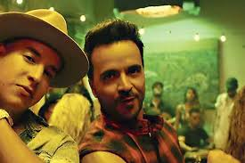"Despacito "
2018
Siguen los buenos tiempos.
2018
El año 2018 fue otro año destacado para el reguetón, con el género dominando las listas de música latina y alcanzando un éxito global sin precedentes. Artistas como J Balvin, Bad Bunny, y Ozuna se posicionaron entre los más escuchados a nivel mundial, según Spotify⁴. El álbum "Vibras" de J Balvin ganó el Latin Grammy como Mejor Álbum de Música Urbana, mientras que la gira de Maluma "F.A.M.E." fue una de las más exitosas del año⁵.
Las canciones de reguetón más escuchadas en Spotify durante 2018 incluyeron "Déjala que vuelva" de Piso 21, "Bella" de Wolfine, "Me Niego" de Reik, Ozuna y Wisin, "Te Boté (Remix)" de Casper Mágico, Bad Bunny y Nio García, y "X" de J Balvin⁴. Estos éxitos formaron parte de muchas playlists y reflejaron la continua evolución y popularidad del reguetón.
Además, el reguetón siguió impactando en la industria de la música con múltiples artistas latinos alcanzando más de mil millones de vistas en YouTube, lo que demuestra la masiva audiencia y el rápido consumo de contenido relacionado con el género.
2019 a la actualidad
El mundo se mueve al ritmo latino
Rompiendo barreras culturales
Desde 2019, el reggaetón ha continuado su trayectoria ascendente, solidificándose como un fenómeno global y cultural. La influencia del género se ha expandido más allá de la música, permeando en la moda, el lenguaje y la identidad de una generación. En el centro de este movimiento se encuentra Bad Bunny, un artista que ha trascendido las barreras del idioma y la geografía para convertirse en un ícono mundial.
Bad Bunny: El Estándar de Oro en la Música Urbana
Bad Bunny, cuyo nombre real es Benito Antonio Martínez Ocasio, ha sido una figura clave en la evolución del reggaetón. Desde su álbum debut "X 100Pre" en 2018, ha experimentado un ascenso meteórico. En 2020, se convirtió en el primer artista de habla hispana en ser el más escuchado en Spotify a nivel mundial. Su estilo único, que fusiona el reggaetón con trap, rap y otros géneros, junto con letras que abordan temas sociales, amor y política, lo han convertido en un portavoz de su generación.
Innovación y Experimentación Musical
El reggaetón ha visto una evolución en su sonido, con artistas como Karol G, Rauw Alejandro y el propio Bad Bunny experimentando con nuevos ritmos y colaboraciones. La fusión de géneros ha sido una constante, con elementos de bachata, funk, hip-hop y música latina integrándose en el reggaetón para crear un sonido distintivo y contemporáneo.
Impacto Cultural y Social
El impacto del reggaetón se extiende más allá de la música. Bad Bunny, en particular, ha utilizado su plataforma para abogar por la justicia social y la igualdad. Su participación en las protestas de Puerto Rico en 2019 contra el gobernador Ricardo Rosselló demostró su compromiso con el cambio social y político.
A través del análisis de grandes volúmenes de datos de plataformas de streaming y redes sociales, se ha podido rastrear la difusión del género y su aceptación en diferentes mercados. Bad Bunny ha sido un caso de estudio en sí mismo, con récords de streaming y visualizaciones que reflejan su alcance global.
En el panorama actual del reggaetón y la música urbana, hay varios artistas que están marcando tendencia y capturando la atención del público a nivel mundial. Además de Bad Bunny, figuras como Rosalía y Becky G han emergido como fuerzas dominantes en la escena. Otros artistas destacados incluyen:
- Tokischa: Conocida por su estilo único y su capacidad para fusionar diferentes géneros, ha sido muy solicitada para festivales y colaboraciones.
- J Balvin: Continúa siendo una figura prominente en la música urbana, llevando el reggaetón a nuevos niveles de reconocimiento internacional.
- Rauw Alejandro: Ha ganado popularidad por su versatilidad musical y su habilidad para mezclar reggaetón con otros estilos como el R&B.
- Anuel AA: Reconocido por su estilo de trap latino y reggaetón, sigue siendo uno de los nombres más influyentes en la escena.
- Villano Antillano: Es una de las voces emergentes que está ganando terreno con su enfoque fresco y letras poderosas.
El Futuro del Reggaetón
Mirando hacia el futuro, el reggaetón parece estar en una posición sólida para continuar su crecimiento. Con artistas innovadores y una base de fans dedicada, el género está listo para seguir evolucionando y desafiando las expectativas. Bad Bunny, como líder indiscutible del movimiento, seguirá siendo una fuerza impulsora en la música urbana y la cultura popular.
Karol G

Bad Bunny
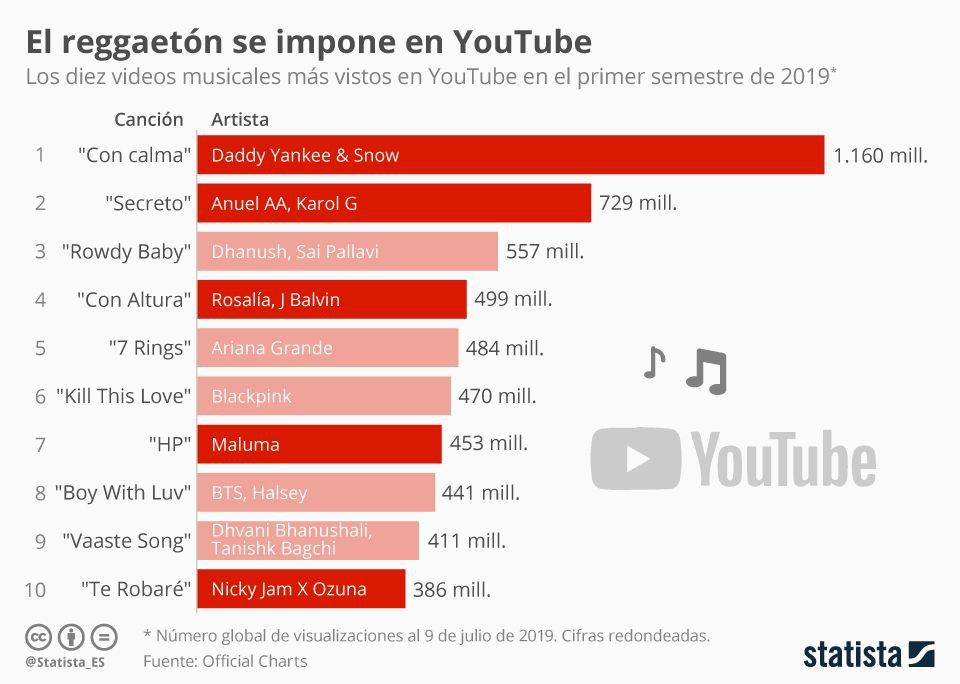En la imagen se puede observar el gran impacto del reggaetón en el mundo, con 5 de las diez primeras canciones más reproducidas de Youtube en la lista pertenecinetes al género
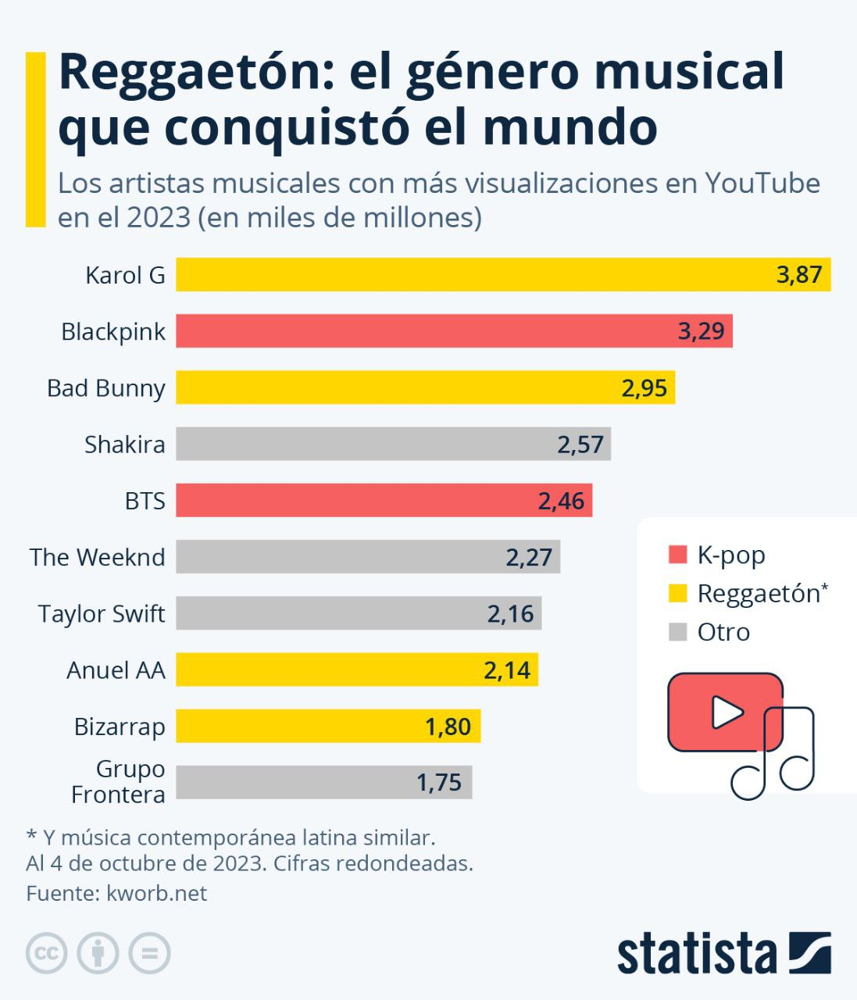El pasado 2023, 4 de los artistas más visualizados en la plataforma Youtube, eran exponentes del género, mostrando su creciente influencia a nivel mundial